Introduction
Deep learning models are growing larger and more complex by the day and so are the challenges in training them. I’m actually quite new to distributed training myself, currently trying to figure out how to scale training across multiple GPUs and even multiple machines using different forms of parallelism.
What I’ve quickly discovered is that the bigger challenge isn’t the training algorithm itself, but understanding how distributed systems work and how to manage resources (GPUs and CPUs) efficiently!

As models get larger, the time to train explodes, sometimes taking days, weeks, or even months just for a single epoch on one GPU.
| Model | Parameters (Millions) |
Training Time on A100 (GPU Hours) |
|---|---|---|
| ResNet-50 | 26 | 31 |
| ResNet-101 | 45 | 44 |
| BERT-Base | 108 | 84 |
| Turing-NLG 17B | 17,000 | TBA |
| GPT-3 175B | 175,000 | 3,100,000 |
Looking at this table, you can see a dramatic surge in both parameter counts and training times:
- ResNet-50 and ResNet-101 are manageable with a single GPU, but BERT-Base is already pushing the limits.
- Turing-NLG 17B and especially GPT-3 175B enter a whole new league, demanding immense computing power and time.
If we tried to train GPT-3 on a single GPU, it would take roughly 355 years to finish. Distributed training is not just useful, it’s absolutely essential as model sizes and training time requirements soar
But why does this happen?
- Model sizes and GPU demand are exploding.
- Training these models can require millions of GPU hours.
Take the LLaMA family of models as an example. The graph below illustrates that as you increase model size (shown by circle diameter), you get better performance, but you’ll need even more training time. Look at the y-axis: we’re talking millions of GPU hours! Training any of these giants on a single GPU is not just slow, it’s practically impossible.

In this blog post, we’ll explore distributed training from the ground up, learning how to scale deep learning to multiple GPUs and machines with various parallelism techniques. We’ll see how to implement these strategies from scratch using PyTorch, then level up by using Ray for scalable training.
As I mentioned, I’m still in the first epoch of my distributed training journey! And as I learn more shall keep updating this writeup.
Before I dive in, I’d like to thank some of the brilliant minds, mentors, and friends who’ve helped me along the way: Prof. Tanmoy Chakraborty, Dr. Yatin Nandwani, Prof. Song Han, my mentor Rohan Shravan (for his exceptional teaching and guidance over the years), and friends/colleagues like Dipankar Ranjan Baisya, Chris Fregly, Zachary Mueller, Ram Mohan, Debanjan Saha, and Siddhant Gupta.
Most of the content here is inspired by their work, lectures, and advice. All references and resources are at the end of this post.
Deep Learning Training Basics
Before diving into scaling, let’s quickly review the standard model training loop, such as a simple Multi-Layer Perceptron (MLP):
1 model = MLP().to(device)
2 optimizer = Adam(model.parameters())
3 criterion = CrossEntropyLoss()
4 data_loader = DataLoader(dataset)
5
6 for epoch in range(num_epochs):
7 model.train()
8 for inputs, targets in data_loader:
9 # 1. Move batch to GPU
10 inputs, targets = inputs.to(device), targets.to(device)
11
12 # 2. Clear gradients
13 optimizer.zero_grad()
14
15 # 3. Forward pass
16 outputs = model(inputs)
17 loss = criterion(outputs, targets)
18
19 # 4. Backpropagation
20 loss.backward()
21
22 # 5. Optimization
23 optimizer.step()What’s happening in each epoch of this training loop?
- We iterate over the data in mini-batches (
line 6-8). - Move each batch to the GPU (
line 9-10). - Zero out the gradients (
line 12-13). - Run the forward pass and compute loss (
line 15-17). - Perform backpropagation to compute gradients (
line 18-19). - Update the model with the optimizer (
line 20-21).

This pattern is the core of most deep learning training loop (in fact, it is the core of any machine learning training routine).
Bottlenecks in Single-GPU Training
When training deep learning models on a single GPU, there are four main things that eat up high-bandwidth memory (HBM):
- Model Parameters (\(\Phi\)):
These are the weights your model is learning. - Parameter Gradients (\(\nabla \Phi\)):
The gradients calculated during backpropagation, which are used to update parameters. - Optimizer States (\(\Phi_{\text{optim}}\)):
Extra variables required by the optimizer, such as momentum and variance inAdam. - Activations (\(\mathcal{M}_{\text{act}}\)):
The intermediate outputs of each layer, which are necessary for gradient computation during backprop.
The first three (parameters, gradients, and optimizer states) are static, they make up the fixed memory footprint determined by the model’s architecture.
The activations are dynamic, depending on your batch and sequence length, and often become the main bottleneck for large-scale training.
Static Memory
If you revisit the training loop, you’ll notice that up until optimizer.step(), everything must be retained in memory. After that, you can discard activations and gradients, but the model parameters and optimizer states stick around.
If \(\Psi\) is the total number of model parameters, the static memory required (\(\mathcal{M}_{static}\)) using the Adam optimizer is a crisp: \(16\Psi\) bytes.
| Component | Precision | Size (\(\Psi\) Bytes) | Details |
|---|---|---|---|
| Model Parameters | BF32 (4 bytes) | \(4\Psi\) | Used for fwd/back passes |
| Parameter Gradients | BF32 (4 bytes) | \(4\Psi\) | For backpropagation |
| Optimizer States (Adam) | FP32 (4+4 bytes) | \(8\Psi\) | 1st and 2nd moment estimates |
| Total Static Memory | \(16\Psi\) | Absolute minimum for static storage |
Adam maintains two additional FP32 (4-byte) tensors per parameter: the first moment (mean of gradients, \(m\)) and the second moment (uncentered variance, \(v\)). Thus, for each parameter, Adam stores \(4\) bytes for \(m\) and \(4\) bytes for \(v\), totaling \(8\Psi\) bytes.
When optimizing large models, memory management becomes an art. Modern LLM training uses mixed precision, typically BF16 (2 bytes) for fast compute, but still maintaining an FP32 (4 bytes) copy for weights and optimizer states to preserve accuracy.
Mixed Precision Training accelerates deep learning and reduces memory usage by combining 16-bit (BF16/FP16) and 32-bit (FP32) floating-point operations.
- How? Forward/backward passes run with low-precision types (BF16), while an FP32
mastercopy is kept for stability. - Why care? Allows larger models/batches to fit in memory and speeds up training. Mixed precision is now standard for large-scale model training.
With mixed precision, the memory usage looks like this:
| Component | Precision | Size (\(\Psi\) Bytes) | Details |
|---|---|---|---|
| Model Parameters | BF16 (2 bytes) | \(2\Psi\) | For forward/backward passes |
| Parameter Gradients | BF16 (2 bytes) | \(2\Psi\) | Backpropagation |
| Master Weights | FP32 (4 bytes) | \(4\Psi\) | For weight updates |
| Optimizer States (Adam) | FP32 (4+4 bytes) | \(8\Psi\) | 1st/2nd moment estimates |
| Total Static Memory | \(16\Psi\) | Unchanged overall |
You might notice that the total static memory remains \(16\Psi\) bytes. So what is the advantage of mixed precision training?
- Faster Training: Using BF16 reduces computation time and memory bandwidth.
- Activations Use Half the Memory: Activations (stored in BF16) become much lighter.
Even though the static footprint isn’t reduced, training can run faster, and we can fit larger dynamic activations, squeezing the most out of every GPU.
But here’s the hard truth: a 70B parameter model eats up around \(70\text{B} \times 16\text{ bytes} = 1120\text{ GB}\) of static memory, which is far beyond a single A100 GPU’s 80GB. And that’s before counting activations!
Dynamic Memory
Dynamic memory, mainly activations, is completely input-dependent and usually the cause of memory headaches.
Activations: The output of each layer. They must be stored until the backward pass to compute the gradients.
- For a linear layer \(y=Wx\), the gradient for \(W\) is calculated as: \[\frac{\partial L}{\partial W} = \frac{\partial L}{\partial y} \cdot x^T\]
- This requires saving the layer’s input, \(x\) (the activation from the previous layer).
Activation Memory Equation: The total memory required for activations (\(m_{act}\)) in mixed precision can be estimated by the following equation: \[\mathcal{M}_{\text{act}} = L \cdot \text{seq} \cdot \text{bs} \cdot h \cdot \left(34 + \frac{5 \cdot n_{heads} \cdot \text{seq}}{\text{h}}\right)\]
Where:
- \(L\): Number of layers
- \(\text{seq}\): Sequence length
- \(\text{bs}\): Batch size (number of samples)
- \(h\): Hidden dimension of the model
- \(n_{heads}\): Number of attention heads

As we can see, activation memory usage is not static for a given model, it:
- Grows
linearlywith batch size (\(bs\)) - Grows
quadraticallywith sequence length (\(seq\))
This quadratic growth (thanks, attention matrix!) is why activation memory swells out of control when you increase batch size or sequence length.
Batch Size Intuition
As you might guess, longer sequences mean more activations, which means more memory. In fact, memory for even a single long sequence can exceed 50GB! Training large models? It’s a real constraint.
In LLM pre-training, batch size typically means number of tokens, not sequences. Token batch size is simply sequence length × micro-batch size.
Real-world pre-training uses massive global batch sizes, often millions of tokens. In practice, training begins with smaller batches (for noisy, fast progress), then scales up batch size for stability and accuracy as you approach convergence.
- Small batches: Early phase, high loss, helps the model learn quickly.
- Big batches: Later phase, less noise, more stable gradients.

Memory Usage in Transformers
To appreciate the scale of this, let’s take a look at the memory usage in Llama 3.1 models (8B, 13B, 70B).

From this graph, we can clearly see that for short sequences (or small batch sizes), memory usage for activations is almost negligible, but from around 4K-16K tokens they start to take up a significant amount of memory (this is because of the quadratic scaling with the sequence length, which we discussed earlier), while usage for parameters, gradients, and optimizer states is roughly independent of the sequence length and batch size.
How can we solve this problem of activation explosion? Can we somehow avoide storing all those activations ?
Solution 1: Activation Recomputation
Why do we store all these activations? We need them to compute parameter gradients during backward pass. What if we could avoid keeping every activation in memory?
This is what gradient checkpointing does, which is also known as activation recomputation. With this technique, we keep only a few activations in memory during the forward pass and recompute the missing ones on-the-fly during backward. We save memory, but at the cost of more compute!
Normally, we’d store every hidden state between learnable operations (like feedforward layers, layer norm, etc.) to use them during the backward pass. With activation recomputation, we only store activations at specific checkpoints and recalculate everything else during backpropagation. This helps us manage memory while training large models.

But there is no free lunch, although memory is saved, we pay with extra computation as activations are re-created during backward. There are a few ways to do activation checkpointing, and each involves different memory and compute tradeoffs.
The most aggressive approach is called Full Activation Checkpointing, where you only store activations at the end of each layer (instead of storing every intermediate activation). This method is great for memory since you’re keeping so little, but it’s the most compute-heavy, often increasing computation time by 30–40% because you have to recompute almost everything during backpropagation.
But do we really need to treat every part of the model the same? By profiling, we find that the main memory culprit is the activations from the Multi-Headed Attention (MHA) layers, since they scale quadratically with sequence length.
This leads to a more balanced strategy: Selective Checkpointing. Here, we only skip storing activations for the heavy MHA layers and still store them for the lighter MLP layers. The payoff is impressive: up to 70% memory savings for only about 2.7% extra computation.
As you can see the graph bellow, on an 8B parameter model with a batch size of 1 and sequence length 4096, activation memory without any checkpointing can hit 97 GB, which is enough to break most GPUs. With selective activation checkpointing, that drops to 17 GB. And with full checkpointing, at the extreme, memory usage can go down to just 1 GB!

Now that we’ve learned about recomputation, we can tame the activation memory usage we saw in the previous graphs!
However, activations still have a linear dependence on the batch size, so as we move to larger batch sizes this might become an issue again. So, what can we do to increase the batch size ?
And to tackle this we have the next trick in our box, gradient accumulation, which we will discuss next.
Solution 2: Gradient Accumulation
Gradient Accumulation is a technique that allows us to accumulate gradients over multiple micro-batches before performing a single global optimization step. This is particularly useful when we have a large batch size and we want to avoid running out of memory.
The general idea is to split the batch into smaller micro-batches (let’s say 3) and process them one by one. We compute the gradients for each micro-batch and accumulate them (we do not do optimizer.step() after each micro-batch). And after processing all the micro-batches, we perform a single global optimization step.

Let’s take an example of a simple linear regression model, predicting the score of a student on a test based on two factors:
- the
number of hours studied(\(x_1\)) and - the
number of hours slept the night before(\(x_2\)).
We assume a simple linear relationship between these inputs and the output score: \[ \text{score}_{pred} = x_1 w_1 + x_2 w_2 + b \] Our aim is to use stochastic gradient descent to determine the best values for \(w_1\), \(w_2\), and \(b\) such that the mean squared error (MSE) between the actual score (\(\text{score}_{target}\)) and the predicted score (\(\text{score}_{pred}\)) is minimized: \[ \underset{w_1, w_2, b}{\mathrm{argmin}} \; (\text{score}_{pred} - \text{score}_{target})^2 \] Without gradient accumulation, we would update the parameters after each batch of student’s data.
1 def train_no_accumulate(params: ModelParameters,
2 num_epochs: int = 10,
3 learning_rate: float = 1e-3):
4 for epoch in range(1, num_epochs + 1):
5 for (x1, x2), y_target in training_data:
6
7 # Calculate the output of the model
8 z1 = x1 * params.w1
9 z2 = x2 * params.w2
10 y_pred = z1 + z2 + params.b
11 loss = (y_pred - y_target) ** 2
12
13 # Calculate the gradients of the loss w.r.t. the parameters
14 loss.backward()
15
16 # Update the parameters (at each iteration)
17 with torch.no_grad():
18 # Equivalent to calling optimizer.step()
19 params.w1 -= learning_rate * params.w1.grad
20 params.w2 -= learning_rate * params.w2.grad
21 params.b -= learning_rate * params.b.grad
22
23 # Reset the gradients to zero
24 # Equivalent to calling optimizer.zero_grad()
25 params.w1.grad.zero_()
26 params.w2.grad.zero_()
27 params.b.grad.zero_()With gradient accumulation, instead of updating the parameters after each batch of data, we accumulate gradients across several micro-batches (micro_batch_size = 3) and then update all at once.
This allows us to train with larger effective batch sizes even if memory is limited.
1 def train_accumulate(params: ModelParameters,
2 num_epochs: int = 10,
3 learning_rate: float = 1e-3,
4 micro_batch_size: int = 3):
5
6 for epoch in range(1, num_epochs + 1):
7 for index, ((x1, x2), y_target) in enumerate(training_data):
8
9 # Calculate the output of the model
10 z1 = x1 * params.w1
11 z2 = x2 * params.w2
12 y_pred = z1 + z2 + params.b
13 loss = (y_pred - y_target) ** 2
14
15 # Accumulate gradients
16 loss.backward()
17
18 # If we have processed 3 micro-batches OR reached the end of the dataset
19 if (index + 1) % micro_batch_size == 0 or index == len(training_data) - 1:
20 with torch.no_grad():
21 # Equivalent to optimizer.step()
22 params.w1 -= learning_rate * params.w1.grad
23 params.w2 -= learning_rate * params.w2.grad
24 params.b -= learning_rate * params.b.grad
25
26 # Reset the gradients = optimizer.zero_grad()
27 params.w1.grad.zero_()
28 params.w2.grad.zero_()
29 params.b.grad.zero_()Gradient accumulation allows us to reduce activation memory, which grows linearly with batch size, by processing smaller micro-batches sequentially. This reduces stored activations and gradients since only one micro-batch’s worth of activations needs to be kept in memory at a time, which helps reduce the overall activation memory footprint.
Again, there’s a trade-off: gradient accumulation increases computation (more forward/backward passes before each optimizer step), so it can slow down training. But it enables much larger effective batch sizes on limited hardware.
So far, we’ve seen how techniques like gradient checkpointing and gradient accumulation help deal with the memory blowup issue caused by activations: the dynamic memory usage.
Both allow us to fit larger models or batches on a single GPU, but mostly by working sequentially and slowing down training. However, these don’t address the static memory required for parameters, gradients, and optimizer states, nor do they fully utilize available hardware (assume we have more than one GPU).
To tackle this, we can scale training across multiple GPUs using Data Parallelism. By splitting micro-batches and processing them simultaneously on several GPUs, we address both memory and compute bottlenecks.
Scaling with Multiple GPUs: Data Parallelism (DP)
Recall that in Gradient Accumulation, we were processing micro-batches (MBS) sequentially. Since these micro-batches are independent of each other, we can process them parallelly on different GPUs.
Something like this below: if you look carefully, now we are processing the micro-batches in parallel on different GPUs, whereas in Gradient Accumulation we were processing the micro-batches sequentially on a single GPU. This is what we do in Data Parallelism (DP).

The Data Parallel Setup
In a Data Parallel setup, we distribute the data across multiple GPUs, while maintaining a full, redundant replica of the model parameters, gradients, and optimizer states on each GPU.
- Replication: We maintain a full, redundant replica of the model parameters (\(\Phi\)), gradients (\(\nabla \Phi\)), and optimizer states (\(\Phi_{\text{optim}}\)) on each GPU.
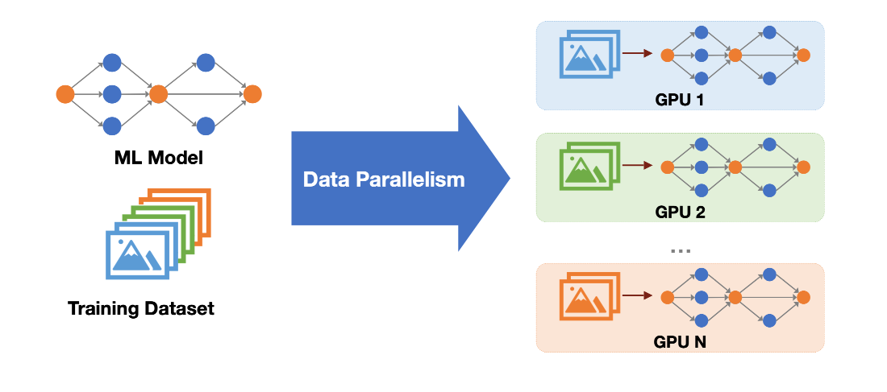
- Parallel Processing: Each GPU processes a unique micro-batch simultaneously. This involves same operations, different data, which is also known as
SIMD(Single Instruction Multiple Data).
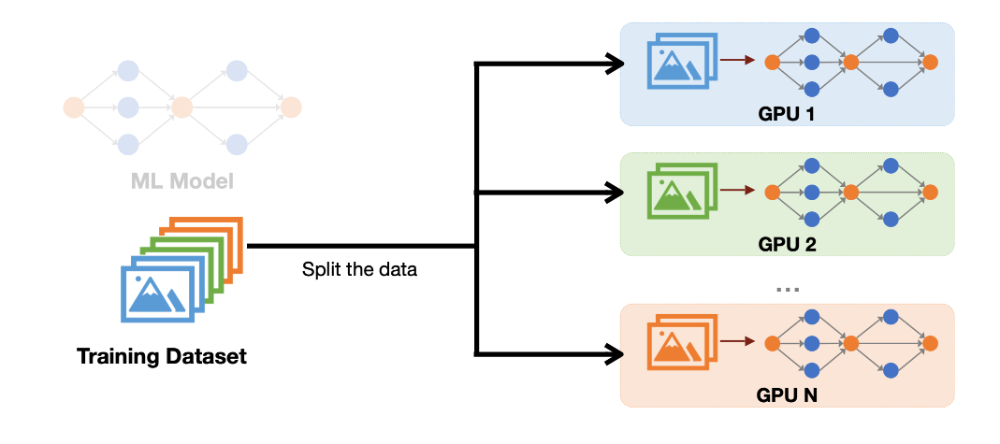
- Local Computation: Each GPU performs its forward pass and backward pass locally and independently, resulting in a local gradient (\(\nabla \Phi_i\)).

If you look carefully, we can perform the forward pass and the backward pass in parallel on different GPUs. But we cannot perform the optimizer step and update the parameters independently on different GPUs. If we do that, we will end up training N different models on N different GPUs which is not what we want.
So, after the backward pass, we need to synchronize the gradients across the GPUs. This is accomplished using the All-Reduce primitive.
Gradient Synchronization: The All-Reduce Primitive
Before we dive into the All-Reduce operation, it’s important to note that NVIDIA provides a rich set of communication primitives as part of its distributed training ecosystem such as NCCL (NVIDIA’s collective communication library). These primitives simplify and accelerate multi-GPU (and multi-node) communication, enabling efficient synchronization and sharding operations required for large-scale training.
All-Reduce is just one such primitive, used specifically for synchronizing gradients across GPUs at the end of each backward pass in standard Data Parallel training. However, there are several other primitives (like All-Gather, Reduce-Scatter, Broadcast, etc.) designed for different patterns of communication and parallelism.
We will discuss these additional primitives as we encounter them while exploring more advanced parallelization techniques (e.g., ZeRO, model sharding, and tensor parallelism) later in the series.
For now, let’s look at All-Reduce in detail, since this is exactly what we need for synchronizing the gradients during Data Parallel training.
Since each GPU computes a gradient based only on its local micro-batch, we must add them to get the global gradient before performing the optimization step. The required communication operation is the All-Reduce primitive:
- Input: Different tensors (the local gradients \(\nabla \Phi_1, \nabla \Phi_2, \dots\)) on each GPU.
- Operation: A reduction operation (usually summation, \(F\)) is applied to all tensors.
- Output: The result of the reduction (the global gradient \(\sum \nabla \Phi_i\)) is made available on all GPUs.

Once every node receives the global gradient, it performs the optimizer.step() operation independently, ensuring all model copies remain in sync. These collective operations are defined in the torch.distributed API.
Here I’ve a machine with 4 T4 GPUs.
ray@ip-10-0-69-225:code$ nvidia-smi -L
GPU 0: Tesla T4 (UUID: GPU-31a1b562-c769-c7f1-ede1-48847cec8d53)
GPU 1: Tesla T4 (UUID: GPU-1beaf204-f6f7-182d-67f8-aee6c58128df)
GPU 2: Tesla T4 (UUID: GPU-934ca246-df7e-2c7f-4bdd-b07859e46b2d)
GPU 3: Tesla T4 (UUID: GPU-141171cb-db62-b770-97ff-955f8c7f2265)Now let’s create a simple example to demonstrate the All-Reduce operation by creating a tensor on each of the 4 GPUs and performing the All-Reduce operation on them.
import torch
import torch.distributed as dist
def init_process():
# Initializes the process group using the efficient nccl backend
dist.init_process_group(backend='nccl')
torch.cuda.set_device(dist.get_rank())
def example_all_reduce():
tensor = torch.tensor([dist.get_rank() + 1] * 3, dtype=torch.float32).cuda()
print(f"Before all_reduce on rank {dist.get_rank()}: {tensor}")
dist.all_reduce(tensor, op=dist.ReduceOp.SUM)
print(f"After all_reduce on rank {dist.get_rank()}: {tensor}")
# Initialize the process group and set the device, create a tensor on each GPU and perform the All-Reduce operation on them.
init_process()
example_all_reduce()We can run this code on 4 GPUs using torchrun:
torchrun --nproc_per_node=4 dist_all_reduce.pyWe will get the following output:
Before all_reduce on rank 3: tensor([4., 4., 4.], device='cuda:3')
Before all_reduce on rank 0: tensor([1., 1., 1.], device='cuda:0')
Before all_reduce on rank 2: tensor([3., 3., 3.], device='cuda:2')
Before all_reduce on rank 1: tensor([2., 2., 2.], device='cuda:1')
After all_reduce on rank 3: tensor([10., 10., 10.], device='cuda:3')
After all_reduce on rank 0: tensor([10., 10., 10.], device='cuda:0')
After all_reduce on rank 2: tensor([10., 10., 10.], device='cuda:2')
After all_reduce on rank 1: tensor([10., 10., 10.], device='cuda:1') Overlapping Communication and Computation
In a naive/vanilla DP implementation, the GPUs sit idle during the communication phase, as the All-Reduce operation begins only after all gradients are computed in the backward pass. This is inefficient.

To eliminate this idle time, we try to overlap the communication and computation as much as possible.
- Method: As soon as the gradient for a specific layer is computed during the backward pass (e.g., \(\nabla L_2\)), we immediately trigger the All-Reduce for that gradient in the background.
- Rationale: The computation of the next layer’s gradient (\(\nabla L_1\)) is independent of the communication of the previous layer’s gradient (\(\nabla L_2\)).
- Implementation: This technique is implemented via hooks in PyTorch (like
post_accumulate_grad_hook()), allowing the next computation step to proceed while the communication step runs concurrently, significantly improving throughput. It attaches anall-reduce hook functionto each parameter that requires gradients. With this implementation, it communicates more frequently but in smaller packets.
def register_backward_hook(self, hook):
"""
Registers a backward hook for all parameters of the model that
require gradients.
"""
for p in self.module.parameters():
if p.requires_grad is True:
p.register_post_accumulate_grad_hook(hook)Previously, while communication was happening, we had to wait for all the gradients to be computed in the backward pass.

But now, we are overlapping the communication and computation. So, we are not waiting for all the gradients to be computed in the backward pass. We are computing the gradients for the next layer while the communication for the previous layer is happening.

We can, in fact, do even better and communicate more efficiently by grouping the gradients into larger buckets and performing the All-Reduce operation on these buckets.
It’s like packing items into boxes before shipping. (Have you noticed that, when placing an order on Amazon, they sometimes offer to pack multiple items into a single box to save on shipping costs? That’s exactly what we’re doing here, but with gradients.)
With this approach, we can significantly reduce communication overhead and speed up computation.

The Limitations of Simple Data Parallelism (DP)
Now that we’ve explored how to scale up training on multiple GPUs using Data Parallelism, a natural question arises: does this scaling result in perfect, linear performance gains? In other words, do we get proportional speedup as we add more GPUs?
The reality is more nuanced. Although data parallelism cleverly overlaps the all-reduce gradient synchronization with backward computation, these efficiency gains don’t hold up indefinitely. As the number of GPUs increases, into the hundreds or thousands, the cost of coordination and the demands on the networking infrastructure start to rise quickly. Eventually, with each additional GPU, the improvements in throughput diminish, and the overall system efficiency drops.
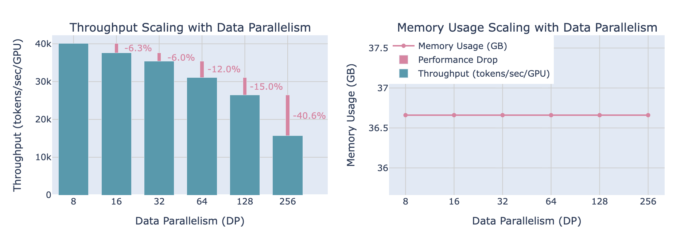
The chart above shows that as we add GPUs, throughput degrades noticeably, even though the memory usage per GPU remains unchanged regardless of the number of data parallel workers.
Data parallelism was our first (simple) strategy to scale training across more GPUs.
However, our discussion so far has rested on the assumption that the entire model fits comfortably within the memory of a single GPU. But what happens when models grow so large (such as GPT-3, with 175 billion parameters) that they can no longer fit into one GPU’s memory (e.g., an NVIDIA A100 with 80GB of RAM)?

As model sizes grow, it becomes common that a single accelerator (GPU in our case) cannot contain all model parameters, optimizer states, and gradients. Therefore, we need to find additional ways to scale training beyond simple DP, which can allow us to train models that don’t fit on a single GPU.
And that is what we will discuss in the next section - ZeRO (Zero Redundancy Optimizer).
ZeRO: Zero Redundancy Optimizer
ZeRO (Zero Redundancy Optimizer) is a family of techniques that addresses constrain of static memory (parameters, gradients, optimizer states) on a single GPU. With ZeRO, we can train models that don’t fit on a single GPU, and it does that by sharding the static memory components across multiple GPUs.
This approach is organized into three possible optimization stages:
- ZeRO-1: optimizer state sharding
- ZeRO-2: optimizer state + gradient sharding
- ZeRO-3: optimizer state + gradient + parameter sharding

Without even going further, you can probably guess that, with this approch we need to do a lot of communication between the GPUs.
But as we have seen in the previous section, we can overlap the communication and computation to some extent. So, we can reduce the communication overhead by overlapping the communication and computation.
Let’s discuss each of these techniques in detail, starting with ZeRO-1.
ZeRO-1: Sharding Optimizer States
Recall from our earlier discussion, the static memory footprint per GPU specifically for mixed precision (using BF16 + FP32):
| Memory Component | Precision | Size (\(\Psi\) Bytes) | Description |
|---|---|---|---|
| Model Parameters | BF16 (2 bytes) | \(2\Psi\) | Used for forward and backward passes |
| Parameter Gradients | BF16 (2 bytes) | \(2\Psi\) | Used in backpropagation |
| Master Weights | FP32 (4 bytes) | \(4\Psi\) | Full precision copy for the update step |
| Optimizer States (Adam) | FP32 (4+4 bytes) | \(8\Psi\) | Stores 1st and 2nd moment estimates (\(4\Psi\) each) |
| Total Static Memory (with Mixed Precision) | \(16\Psi\) | The absolute floor for static storage |
The largest part of the static memory comes from the optimizer states, especially for optimizers like Adam, which maintain both first and second moment statistics.
With DP, all these components are duplicated on every GPU in the data-parallel group, so each device bears the full cost (\(16\Psi\)) of these tensors (ignoring activations for now).
When discussing the sharding of optimizer states in ZeRO, we must also include the master weights (the FP32 copy of model parameters used for the optimizer update) in the sharding calculation. Both the optimizer states and these master weights are stored in FP32, and both are sharded together in ZeRO-1.
Thus, when you see references to optimizer state sharding, this always implicitly includes master weights in modern mixed precision training setups.
With ZeRO-1, the goal is to shard (that is, partition and spread) the FP32 optimizer states and FP32 master weights across the \(N_d\) GPUs, rather than storing them fully on each device. This introduces the following changes:
- Every GPU stores only a \(\frac{1}{N_d}\)th slice of the
optimizer states(\(8\Psi\)) andmaster weights(\(4\Psi\)), rather than the full \(12\Psi\). - The
parametersandgradientstensors (in BF16) remain fully replicated on each GPU for compatibility with forward and backward passes.
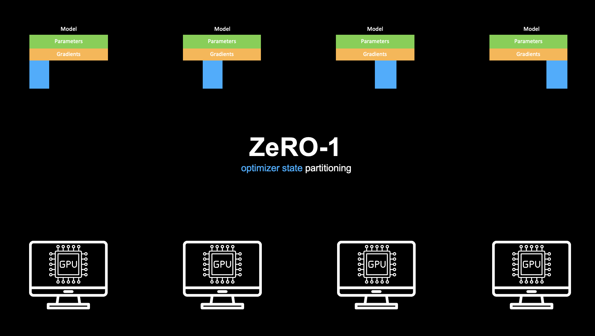
The resulting static memory footprint per GPU with ZeRO-1 sharding thus becomes: \[ \mathcal{M}_{\text{ZeRO-1}} = 2\Psi + 2\Psi + \frac{12\Psi}{N_d} \]
- Parameters (BF16): \(2\Psi\)
- Gradients (BF16): \(2\Psi\)
- Optimizer States + Master Weights (FP32): \(\frac{12\Psi}{N_d}\)
Just to make this more concrete, let’s look at some practical numbers. Suppose you have a modern A100/H100 GPU with 80GB of memory. In DP, the largest model you can fit is roughly:
\[ \text{Max Parameters (DP)} = \frac{80~\text{GB}}{16~\text{bytes per param}} \approx 5~\text{billion parameters} \]
But if you apply ZeRO-1 with 64 GPUs (\(N_d = 64\)), the optimizer states and master weights are now only a small shard per GPU:
- \(\frac{12}{64} \approx 0.1875\) (so just 1.5GB of optimizer/master weights per GPU for a 5B model)
- The effective static memory per parameter drops from 16 bytes (DP) to about 4.2 bytes (ZeRO-1).
So now, the largest model you can train on that same 80GB GPU jumps to:
\[ \text{Max Parameters (ZeRO-1, 64 GPUs)} = \frac{80~\text{GB}}{4.2~\text{bytes per param}} \approx 19~\text{billion parameters} \]
So, it’s great that we can train a larger model on the same hardware, but we still need to discuss the communication overhead involved in this approach.
For the forward pass, we don’t need to do any communication, as we have all the parameters in each GPU.

During the backward pass, each GPU computes gradients for all parameters, so every GPU holds a full copy of the gradients. To ensure the gradients are synchronized across all GPUs, we perform an All-Reduce operation. After this step, all GPUs have identical, synchronized gradients.

But now, on each GPU, we can discard all gradients except the one corresponding to the optimizer state stored on that particular GPU, and keep only that one.

After this, each GPU can update its respective model parameters to its corresponding optimizer state and gradients.
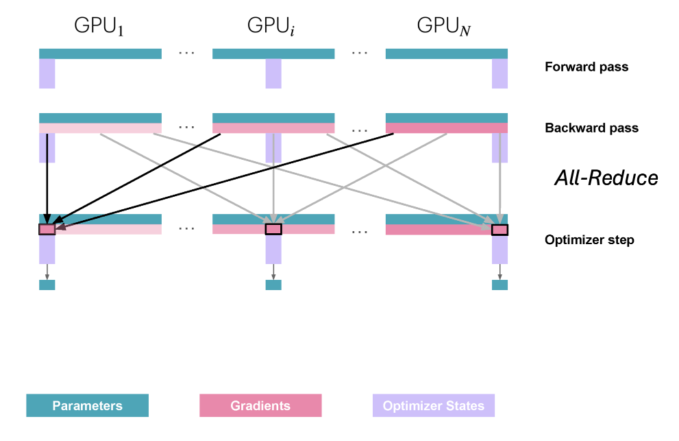
At this point, we need to communicate again to ensure that all GPUs have the updated model parameters. After the update step, each GPU holds the updated parameters only for its own shard of the optimizer state.
But what type of communication do we need to do ?
Each GPU needs to gather the updated model parameters from all the other GPUs. For this, we perform an All-Gather operation, which is another communication primitive similar to All-Reduce that we’ve seen earlier.

Let’s quickly see an example of how to do this using torch.distributed.all_gather(). Here we are creating a tensor on each GPU and performing the All-Gather operation on these tensors.
import torch
import torch.distributed as dist
def init_process():
# Initializes the process group using the efficient nccl backend
dist.init_process_group(backend='nccl')
torch.cuda.set_device(dist.get_rank())
def example_all_gather():
tensor = torch.tensor([dist.get_rank() + 1] * 3, dtype=torch.float32).cuda()
# Prepare an output list of tensors for all_gather
world_size = dist.get_world_size()
gathered = [torch.zeros_like(tensor) for _ in range(world_size)]
print(f"Before all_gather on rank {dist.get_rank()}: {tensor}")
dist.all_gather(gathered, tensor)
print(f"After all_gather on rank {dist.get_rank()}: {[t.cpu().tolist() for t in gathered]}")
# Initialize the process group and set the device, create a tensor on each GPU and perform the All-Gather operation on them.
init_process()
example_all_gather()Just like before, we can run this code with 4 GPUs using torchrun:
torchrun --nproc_per_node=4 dist_all_gather.pyWe will get the following output:
Before all_gather on rank 2: tensor([3., 3., 3.], device='cuda:2')
Before all_gather on rank 0: tensor([1., 1., 1.], device='cuda:0')
Before all_gather on rank 1: tensor([2., 2., 2.], device='cuda:1')
Before all_gather on rank 3: tensor([4., 4., 4.], device='cuda:3')
After all_gather on rank 0: [[1.0, 1.0, 1.0], [2.0, 2.0, 2.0], [3.0, 3.0, 3.0], [4.0, 4.0, 4.0]]
After all_gather on rank 1: [[1.0, 1.0, 1.0], [2.0, 2.0, 2.0], [3.0, 3.0, 3.0], [4.0, 4.0, 4.0]]
After all_gather on rank 2: [[1.0, 1.0, 1.0], [2.0, 2.0, 2.0], [3.0, 3.0, 3.0], [4.0, 4.0, 4.0]]
After all_gather on rank 3: [[1.0, 1.0, 1.0], [2.0, 2.0, 2.0], [3.0, 3.0, 3.0], [4.0, 4.0, 4.0]]With that, each GPU now has the updated model parameters. They can now begin the next batch, performing the forward pass with these updated parameters, allowing training to continue.

So, this is how ZeRO-1 strategy works.
Now, if go back and carefully look after All_Reduce operation in ZeRO-1, each GPU discarded all the other gradients and kept only the one whose corresponding optimizer state is present on that particular GPU.
Which makes us think, why we need to keep all the gradients in all the GPUs in the first place ? Why can’t we shard the gradients as well along with its corresponding optimizer state? And this is exactly what ZeRO-2 strategy does.
ZeRO-2: Sharding Gradients
With ZeRO-2, we further shard the gradients right alongside the optimizer states. So, each GPU now only needs to store the gradient shard corresponding to its optimizer state shard.
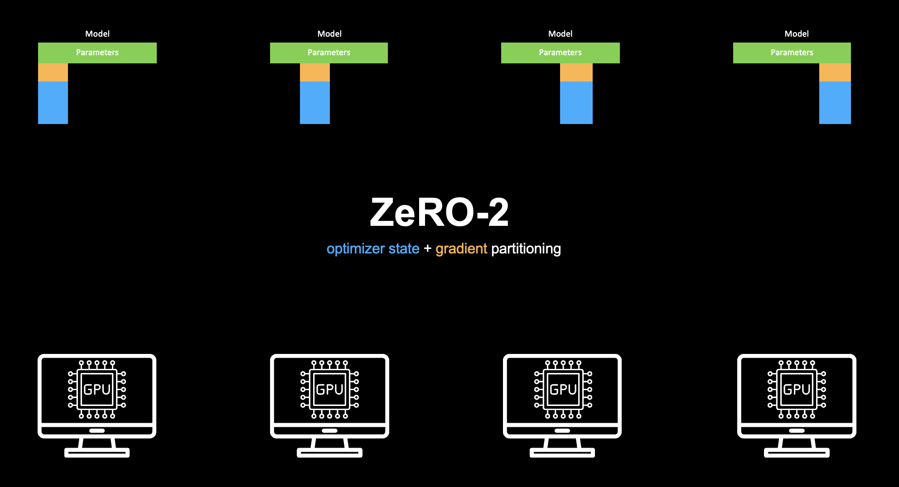
Just as we did for ZeRO-1, let’s run the numbers for ZeRO-2 sharding to see the dramatic benefits. With ZeRO-2, the memory formula per GPU now becomes: \[ \mathcal{M}_{\text{ZeRO-2}} = 2\Psi + \frac{2\Psi + 12\Psi}{N_d} \]
- Parameters (BF16): \(2\Psi\)
- Gradients (BF16): \(\frac{2\Psi}{N_d}\)
- Optimizer States + Master Weights (FP32): \(\frac{12\Psi}{N_d}\)
If we again use an A100/H100 GPU with 80GB of memory, and \(N_d = 64\) GPUs, then the largest model we can train would be:
\[ \text{Max Parameters (ZeRO-2, 64 GPUs)} = \frac{80~\text{GB}}{2.2~\text{bytes per param}} \approx 36~\text{billion parameters} \]
Let’s put this side-by-side:
| Strategy | Effective Bytes/Param | Max Model on 80GB GPU |
|---|---|---|
| DP | 16 | ~5B |
| ZeRO-1 | 4.2 | ~19B |
| ZeRO-2 | 2.2 | ~36B |
So, ZeRO-2 nearly doubles the maximum trainable model size compared to ZeRO-1 (and over 7x compared to vanilla DP). Let’s see how the communication overhead changes with ZeRO-2.
For the forward pass, we don’t need to do any communication (like in ZeRO-1), as we have all the parameters in each GPU.

Next, in the backward pass, instead of performing an All-Reduce over the gradients, we perform a Reduce-Scatter operation. This is another communication primitive, similar to All-Reduce and All-Gather, which we encountered earlier.
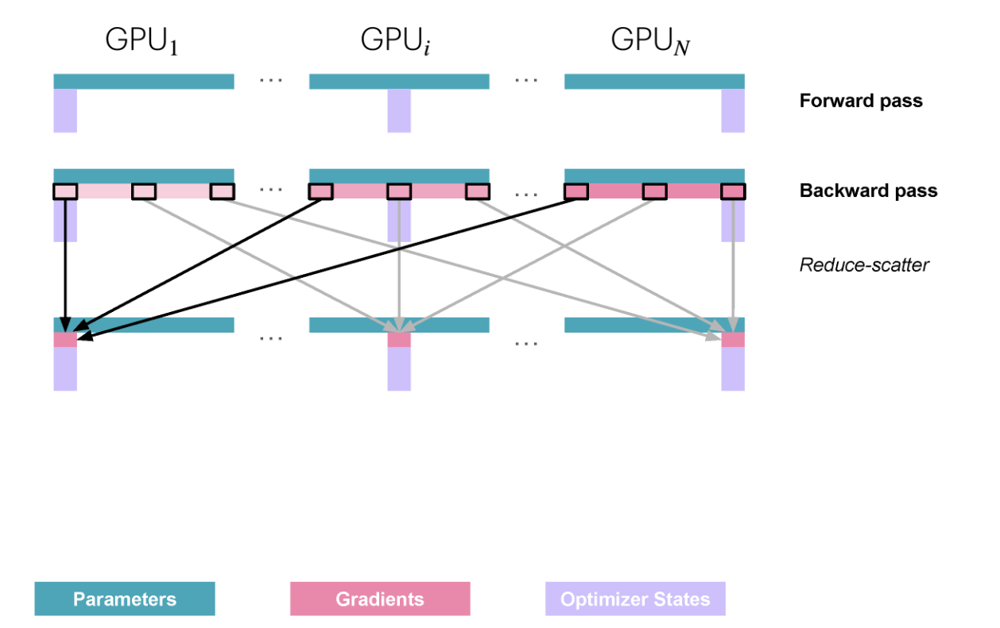
So what Reduce-Scatter operation does internally is, its first reducing (summing) the gradients across all the GPUs and then scattering the result to the GPUs that need to have the gradient shard.

- ZeRO-1: We keep a copy of all gradients.
- ZeRO-2: Communicate and release the gradients on the fly.
- In practice, both use
reduce-scatterfor gradients andall-gatherfor FP32 copy of parameters. - There is no real overhead to using ZeRO-2 over ZeRO-1 besides implementation complexity, and indeed ZeRO-2 is usually the better option.
We can see how this works with an example.
import torch
import torch.distributed as dist
def init_process():
# Initializes the process group using the efficient nccl backend
dist.init_process_group(backend='nccl')
torch.cuda.set_device(dist.get_rank())
def example_reduce_scatter():
rank = dist.get_rank()
world_size = dist.get_world_size()
# Construct a single input tensor, then split into equal chunks (one for each rank)
input_tensor = torch.arange(1, world_size * 3 + 1, dtype=torch.float32).cuda()
input_list = list(torch.chunk(input_tensor, world_size))
output_tensor = torch.zeros(3, dtype=torch.float32).cuda()
print(f"Before reduce_scatter on rank {rank}: {[t.cpu().tolist() for t in input_list]}")
dist.reduce_scatter(output_tensor, input_list, op=dist.ReduceOp.SUM)
print(f"After reduce_scatter on rank {rank}: {output_tensor.cpu().tolist()}")
# Initialize the process group and set device, then perform Reduce-Scatter
init_process()
example_reduce_scatter()Just like before, we can run this code with 4 GPUs using torchrun:
torchrun --nproc_per_node=4 dist_reduce_scatter.pyWe will get the following output:
Before reduce_scatter on rank 0: [[1.0, 2.0, 3.0], [4.0, 5.0, 6.0], [7.0, 8.0, 9.0], [10.0, 11.0, 12.0]]
Before reduce_scatter on rank 1: [[1.0, 2.0, 3.0], [4.0, 5.0, 6.0], [7.0, 8.0, 9.0], [10.0, 11.0, 12.0]]
Before reduce_scatter on rank 2: [[1.0, 2.0, 3.0], [4.0, 5.0, 6.0], [7.0, 8.0, 9.0], [10.0, 11.0, 12.0]]
Before reduce_scatter on rank 3: [[1.0, 2.0, 3.0], [4.0, 5.0, 6.0], [7.0, 8.0, 9.0], [10.0, 11.0, 12.0]]
After reduce_scatter on rank 0: [4.0, 8.0, 12.0]
After reduce_scatter on rank 1: [16.0, 20.0, 24.0]
After reduce_scatter on rank 2: [28.0, 32.0, 36.0]
After reduce_scatter on rank 3: [40.0, 44.0, 48.0]Each GPU starts with identical chunked inputs. After reduce_scatter, every GPU gets the sum (across all GPUs) of the i-th chunk, distributed such that GPU 0 gets chunk 0’s sum, GPU 1 gets chunk 1’s sum, etc.
After Reduce-Scatter operation, each GPU now has the gradient shard corresponding to its optimizer state shard which it can use to update its respective model parameters.
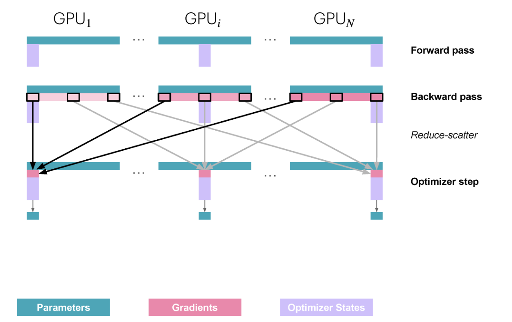
At this stage, we need to communicate once more to share the updated model parameters across all GPUs. This is because, after applying local updates, each GPU holds the updated parameters only for its own optimizer state shard.

This is how ZeRO-2 strategy works.
We have come a long way from the vanilla DP to ZeRO-2, where we have reduced the memory footprint quite significantly, but can we further scale ? Of course we can, and this is exactly what we do in ZeRO-3.
ZeRO-3: Sharding Parameters
ZeRO-3 is the most aggressive form of ZeRO, it shards (as you might have guessed, by now) all the static memory components: parameters, gradients, and optimizer states.
So, each GPU now only needs to store the parameter shard corresponding to its optimizer state shard.

You may have seen the terms ZeRO-3 and Fully Sharded Data Parallel (FSDP) used almost interchangeably in literature, blogs, and PyTorch documentation. That’s because the underlying strategy is the same: shard parameters, gradients, and optimizer states across GPUs to minimize memory usage per device.
- ZeRO-3 originated as a theoretical memory optimization described in the Microsoft DeepSpeed ZeRO paper, outlining stage 3 of ZeRO by sharding all model state across different GPUs. Its basically a concept implemented in multiple frameworks like DeepSpeed, etc.
- FSDP (Fully Sharded Data Parallel) is the official PyTorch implementation of this idea. FSDP leverages the ZeRO-3 approach and provides a flexible interface for applying parameter, gradient, and optimizer sharding with PyTorch models in both research and production environments.
With ZeRO-3, the memory formula per GPU now becomes: \[ \mathcal{M}_{\text{ZeRO-3}} = \frac{2\Psi + 2\Psi + 12\Psi}{N_d} = \frac{16\Psi}{N_d} \]
- Parameters (BF16): \(\frac{2\Psi}{N_d}\)
- Gradients (BF16): \(\frac{2\Psi}{N_d}\)
- Optimizer States + Master Weights (FP32): \(\frac{12\Psi}{N_d}\)
If we again use an A100/H100 GPU with 80GB of memory, and \(N_d = 64\) GPUs, then the largest model we can train would be:
\[ \text{Max Parameters (ZeRO-3, 64 GPUs)} = \frac{80~\text{GB}}{0.25~\text{bytes per param}} \approx 320~\text{billion parameters} \]
Let’s put this all side-by-side again:
| Strategy | Effective Bytes/Param | Max Model on 80GB GPU |
|---|---|---|
| DP | 16 | ~5B |
| ZeRO-1 | 4.2 | ~19B |
| ZeRO-2 | 2.2 | ~36B |
| ZeRO-3 | 0.25 | ~320B |
As you can see, ZeRO-3/FSDP increases the maximum trainable model size by a factor of 10 compared to ZeRO-2, and by more than 60 times compared to vanilla DP.
Now, let’s see how the communication overhead changes with ZeRO-3.
As the model parameters are now sharded, we have a problem, we can not do the forward pass without any communication, we need to do a All-Gather operation to first get the full model parameters on all the GPUs.
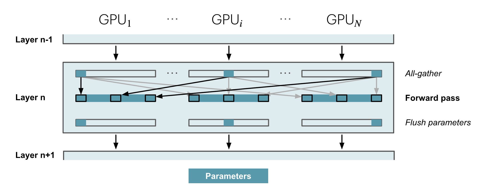
But after the forward pass, we can flush the model parameters from memory, as we don’t need them anymore for the current forward pass (as we can see above). So, although it reduces the memory footprint, it introduces a communication overhead.
Similarly in the backward pass, we need to gather the parameters as and when needed using All-Gather and then perform Reduce-Scatter operation to get the gradient shards on all the GPUs as we did in ZeRO-2.

Let’s recap how communication and memory work with ZeRO-3.
For the forward pass, since the parameters are fully sharded, we have to all-gather the weights whenever we need them, which gives us a communication cost of \(\Psi\). Because those parameters can be released from memory right after the forward usage, we have to all-gather again as needed in the backward pass, so we pay that \(\Psi\) “tax” a second time.
And just like ZeRO-2, we need a reduce-scatter for the gradients at the end of backward pass, which adds yet another \(\Psi\) in communication cost. So in total, the communication bill per iteration comes out to \(3\Psi\), a bit higher than the \(2\Psi\) we saw in ZeRO-2.
On paper, this sounds like a lot of data being moved around, but in practice it’s not too scary! Thanks to prefetching, we can overlap these all-gather operations with computation.
Typically, while we’re doing the forward for Layer \(n\), we can start all-gathering the parameters for Layer \(n+1\) in parallel.
Similarly, during the backward pass, we can prefetch the next set of weights needed. This overlap keeps things efficient as long as we aren’t cranking DP up to very large scales (as a rough guideline, keeping DP \(\leq\) 512 is usually safe).
From the memory perspective, by sharding everything, we’ve boiled the formula down to its most compact form:
\[ \mathcal{M}_{\text{ZeRO-3}} = \frac{2\Psi + 2\Psi + 12\Psi}{N_d} \] Increasing the DP group size keeps reducing per-GPU model memory, but activation memory still requires tricks like checkpointing and grad accumulation, which we discussed earlier.
One important point that can be confusing at first: Even though ZeRO-1, ZeRO-2, and ZeRO-3 all shard the model, they are still forms of DP.
Each GPU still processes the entire forward and backward pass of the model on its own batch of data, just like vanilla DP. The main difference is that ZeRO changes how the model’s parameters and related tensors are stored and managed across GPUs, which dramatically reduces memory usage but doesn’t change the core idea of DP.
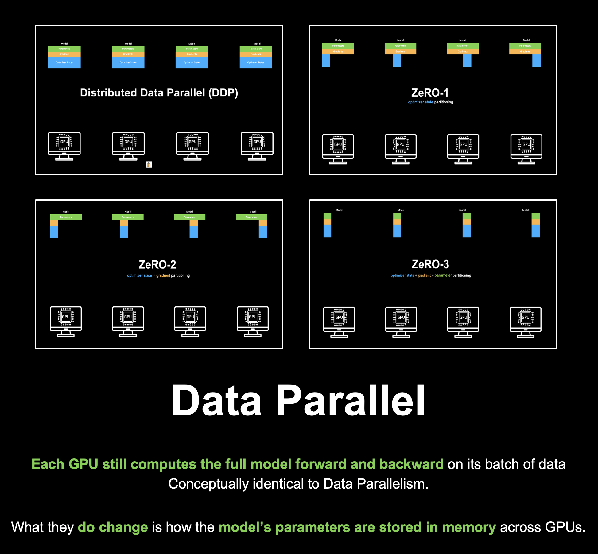
Introduction to Ray - Unified AI Compute Engine
Now that we’ve explored the ZeRO stages and different data parallel strategies, let’s discuss how to put these techniques into practice using Ray and PyTorch, and why Ray is such a good fit for large-scale distributed training in real-world settings.
Until now, we’ve mostly focused on how to leverage multiple GPUs within a single machine. However, scaling up modern deep learning requires distributing the training job not just across several GPUs, but often across many different machines as well.
This introduces a host of new challenges from launching and configuring clusters, to monitoring jobs, handling failures, and minimizing the engineering overhead when scaling up and down.
When moving to distributed training at scale, several key requirements and challenges emerge in practice:
- Scalability and Speed: Training jobs should be able to leverage more GPUs and machines to finish faster, without painful setup.
- Easy Infrastructure Management: We shouldn’t need to spend time manually setting up or configuring clusters, whether on cloud or on-premises resources.
- Visibility and Monitoring: It must be easy to track metrics, logs, and failures across all nodes, so debugging and monitoring don’t turn into a bottleneck.
- Reliability and Fault Tolerance: Hardware failures, network issues, or preempted nodes shouldn’t force us to restart training from scratch, resilience and checkpointing are critical.
- Minimal Code Changes: Adapting our code for distributed training shouldn’t require a major rewrite of training logic.
Ray provides solutions for all of these requirements (and more), making it a compelling choice for large-scale distributed deep learning.
In the sections that follow, we’ll see concrete code and recipes showing how easy Ray makes it to scale PyTorch training seamlessly, from simple data parallel jobs to advanced ZeRO and FSDP setups. But before that let’s spend some time to understand what Ray is and how it works.
Ray is an open-source, unified AI Compute Engine designed to scale Python applications, especially AI/ML workloads, from a single machine to clusters with thousands of machines, all with minimal code changes.
At the core of Ray is Ray Core, a low-level distributed computing framework which provides a simple, Pythonic API for building and scaling any distributed applications.
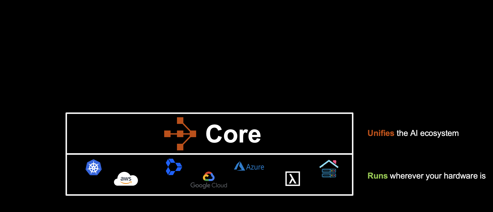
Ray Core Primitives
Ray Core provides a minimal, yet powerful set of primitives that let you upgrade normal Python code into distributed code with almost no friction.
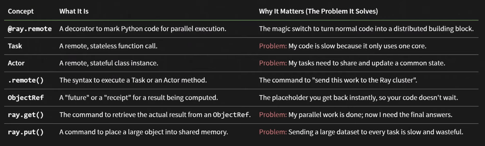
Ray handles the difficult parts, like task scheduling, node failures, data transfers, and more behind the scenes so you don’t have to. As an ML engineer or researcher, you can focus on your model, algorithm, and data, while Ray takes care of the complexities of distributed systems.
An example: For Stateless Tasks (Tasks)
Let’s try to understand the core primitives of Ray, tasks and actors with an example. Imagine you’re building a simple app where you need to process a batch of images with a simple transformation (like inverting the colors).
At first, you write a for-loop to process the images sequentially. It works, but it’s sluggish, using only a single CPU core, even if your machine has lets say eight cores. What if you need to process hundreds or thousands of images? This is where Ray comes in, and a world of instant scalability.
Below, we walk step-by-step through the journey: from a plain, sequential Python function, which is painfully slow! to a parallel powerhouse processed by using Ray Tasks, and finally to coordinated, stateful parallelism with Ray Actors.
Each image is processed one after another, burning a whole second per image. With 8 images, that’s 8 seconds to process all the images.
# sequential_process.py
import time
import numpy as np
def process_image(image: np.ndarray) -> np.ndarray:
"""Simulates a slow 1-second filter."""
time.sleep(1)
return 255 - image
images = [np.random.randint(0, 255, (10, 10, 3)) for _ in range(8)]
start_time = time.time()
# Sequential: 8 images × 1 sec/image = 8 seconds
results = [process_image(img) for img in images]
end_time = time.time()
print(f"Processed {len(results)} images in {end_time - start_time:.2f} seconds.")Our code works, but only uses a single core, leaving the rest idle. Not a good situation. Let’s try to parallelize it using Ray Tasks.
Now, let’s use Ray to parallelize the image processing.
Ray’s @ray.remote decorator instantly makes your function run in parallel, one copy per available CPU core.
# parallel_process.py
import ray
import time
import numpy as np
# 1. Initialize Ray - autodetects & uses all available CPU cores
ray.init()
# 2. Decorate the function as a remote Ray task
@ray.remote
def process_image(image: np.ndarray) -> np.ndarray:
"""Simulates a slow 1-second filter."""
time.sleep(1)
return 255 - image
images = [np.random.randint(0, 255, (10, 10, 3)) for _ in range(8)]
start_time = time.time()
# 3. Launch tasks in parallel; returns list of ObjectRefs (futures)
result_refs = [process_image.remote(img) for img in images]
# 4. Wait for and retrieve finished results via ray.get()
results = ray.get(result_refs)
end_time = time.time()
# On an 8-core machine: ~1 second total runtime!
print(f"Processed {len(results)} images in {end_time - start_time:.2f} seconds.")
ray.shutdown()What we did differently?
- We decorated the function with
@ray.remotedecorator to make it a remote task. - We called the function with
.remote()to launch it as a remote task. - We then wait for the results by calling
ray.get()on theObjectRefsreturned by theremotecalls. - The secret here is the
ObjectRef, each.remote()call sends off a job in the background, while your main code keeps going. When you callray.get(result_refs), Ray assembles all results when they are ready.
By adding just @ray.remote, .remote(), and ray.get(), we get a nearly 8x speedup with 8 CPU cores.
Going Further: For Stateful Tasks (Actors)
The beauty of Ray is that it doesn’t just parallelize our work, it also gives us the right tool for sharing state across those jobs. Imagine that you want a running tally (say, the total number of pixels processed across all images), but you can’t use a global variable, because each parallel job runs isolated.
What you really want is a service: a live, remote counter that all jobs can update in real-time. That’s what is known as an Actor in Ray: a class with its own persistent state, living somewhere on the cluster.
Let’s see how to create and use an Actor for any stateful task.
# actor_counter.py
import ray
import numpy as np
import time
ray.init()
# 1. Define the stateful service as a Python Class
@ray.remote
class PixelCounter:
# The internal state is defined in __init__
def __init__(self):
self.total_pixels = 0
# A method to mutate (update) the internal state
def add(self, num_pixels: int):
self.total_pixels += num_pixels
# A method to retrieve the internal state
def get_total(self) -> int:
return self.total_pixels
# 2. Modify the Task to use the Actor Handle
@ray.remote
def process_image_with_actor(image: np.ndarray, counter_actor: "ActorHandle"):
# This task calls the Actor's add method remotely
counter_actor.add.remote(image.size)
time.sleep(1)
# The image processing logic is here, but omitted for simplicity
# --- Main Script ---
images = [np.random.randint(0, 255, (10, 10, 3)) for _ in range(8)]
image_size = images[0].size
expected_total = image_size * len(images) # 8 * 300 = 2400
# 3. Create a single instance (the Actor Handle)
counter = PixelCounter.remote()
# 4. Launch 8 parallel tasks, passing the Actor Handle to each
task_refs = [process_image_with_actor.remote(img, counter) for img in images]
# Wait for all the image processing tasks to complete
ray.get(task_refs)
# 5. Retrieve the final state from the Actor
final_total_ref = counter.get_total.remote()
final_total = ray.get(final_total_ref)
print(f"Expected total pixels: {expected_total}")
print(f"Actual total from actor: {final_total}")
ray.shutdown()What we did differently?
- Previously, with Ray Tasks, each task independently processed an image in a
statelessway. Now, by with the Actor (the remotePixelCounterclass), we can safely accumulate the total pixel count as each task reports in. - The Actor’s state is persistent across many requests, enabling us to coordinate and aggregate information even in a distributed, parallel environment.
- The key difference from before is that we now define a
@ray.remoteclass (PixelCounter) and pass its handle to the tasks, so they can calladd.remote()to update the shared state.
This pattern of combining Ray Tasks for stateless (think of Python functions), independent work and Ray Actors for stateful (think of Python classes) is the foundation of scalable Python pipelines for any real-world application (not just any AI applications).
Ray’s primitives empower us to build scalable, reliable, and maintainable distributed applications, without rewriting all our code or micro-managing threads and processes.
Ray for Different AI Workloads
While Ray Core provides the low-level primitives for building distributed applications, it is not the only or always the best option, especially for specialized AI workloads.
It also offers higher-level abstractions tailored to specific AI tasks like data processing, training, hyperparameter search, RL and model serving.
| Ray Library | Purpose | Key Features / Benefits |
|---|---|---|
Ray Data |
Scalable Data Ingest, Processing, Inference |
Effortlessly shards and preprocesses massive datasets; streams data efficiently between CPUs (ETL) and GPUs (training/inference) to maximize hardware utilization. |
Ray Train |
Distributed Training & Fine-Tuning |
Abstracts away multi-node/GPU orchestration and synchronization for PyTorch, TensorFlow, etc., without the need for boilerplate or manual sync. |
Ray Tune |
Scalable Hyperparameter Search |
Coordinates and manages hyperparameter trials (search, early stopping, scheduling) across a cluster; includes experiment tracking and best-model picking. |
Ray Serve |
Fast, Programmable Model Serving |
Deploys models and logic as microservices with auto-scaling; supports model composition and features like traffic splitting and versioning. |
Ray RLlib |
Scalable Reinforcement Learning |
Provides a comprehensive library for training and evaluating RL algorithms. |
These libraries are built on top of Ray Core and offer a more user-friendly interface for building distributed applications.
If Ray Core’s Tasks and Actors are this powerful, why bother with higher-level Ray libraries like Ray Train or Ray Data?
Simple answer is Abstraction and Specialization. While it’s technically possible to build a full distributed training pipeline with only Ray Core, that approach means you shoulder all the complexities, like manual data sharding, synchronization (e.g., for PyTorch DDP), distributed checkpointing, fault tolerance, handling resuming, and hyperparameter search. That’s a lot of boilerplate and risk!
It also has tight integration with popular frameworks like PyTorch, vLLM, Hugging Face, and more.

This unified ecosystem empowers us to build end-to-end distributed AI workflows.
In this blog, we’ll focus on distributed training with Ray Train, showing how it can scale our PyTorch training from a single GPU to a full cluster almost effortlessly.
While PyTorch Distributed (such as DDP) is an excellent built-in solution for multi-GPU training, it’s primarily designed for single-node or homogeneous, tightly-coupled clusters. If you’re just scaling to multiple GPUs on one machine, PyTorch’s distributed tools/APIs are often enough. And you can run your training job with torchrun command.
However, the challenges multiply dramatically the moment you want to scale across several machines or need to orchestrate complex workflows. Tasks like:
- Launching jobs and synchronizing them across machines,
- Managing different workers, node failures, and resuming or monitoring experiments,
- Efficiently using both CPUs (for pre-processing and data loading) and GPUs (for training/inference) in one seamless workflow,
- Sharding and streaming large datasets not just for one epoch, but for repeated, distributed, and fault-tolerant training, becomes painful and complex with only PyTorch’s stock tools.
This is exactly where Ray shines.
It abstracts away the low-level engineering required to run distributed workloads at scale. For instance, with Ray Train and Ray Data, you get seamless multi-GPU, multi-node orchestration, unified CPU-GPU pipelines, resilience and scalability. This helps you focus on your algorithms and models, rather than the underlying infrastructure.
Distributed Training with Ray Train and PyTorch
Now that we have understood the basics of Ray and how it can help us scale any application, let’s now dive deep into distributed training with Ray Train and PyTorch.
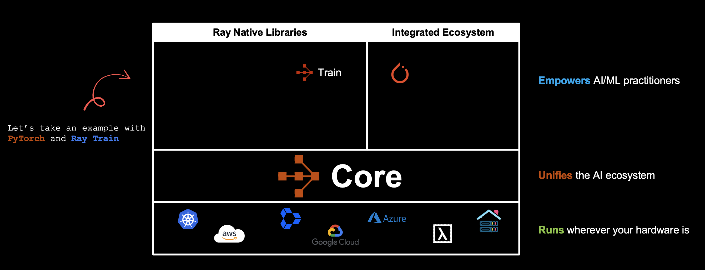
Before diving into distributed training, let’s establish a baseline by looking at a simple single-GPU training loop. This will help us understand what needs to change when we migrate to distributed training.
Single-GPU PyTorch Training on CIFAR-10
We’ll use a Vision Transformer model (torchvision.models.VisionTransformer) and the CIFAR-10 dataset. This code works on CPU, GPU (CUDA), or Apple MPS, but it’s strictly ordinary, non-distributed PyTorch.
If you have trained any model with PyTorch on a single machine/colab notebook, you might have seen a similar training loop, where we:
- Download and prepare the
dataset- Set up
data loaders
- Set up
- Define the
model- Move the model to the available device (GPU, MPS, or CPU).
- Set up
optimizerandloss. - Run the
training loop.- Iterate over training data to update model weights.
- Check accuracy on validation data.
- Optionally,
checkpointthe model at the end.
This works perfectly for one GPU or a single machine, but doesn’t scale automatically. We’ll see soon how to migrate this to Ray Train for scaling, but for now, here’s the basic setup.
DataLoader Function
This function sets up the DataLoaders for the CIFAR-10 training and test splits.
from torchvision import datasets, transforms
from torchvision.transforms import Normalize, ToTensor
from torch.utils.data import DataLoader
from filelock import FileLock
import os
def get_dataloaders(batch_size):
"""
Create standard PyTorch DataLoaders.
No distributed code, just vanilla PyTorch.
"""
transform = transforms.Compose([
ToTensor(),
Normalize((0.5, 0.5, 0.5), (0.5, 0.5, 0.5))
])
with FileLock(os.path.expanduser("~/data.lock")):
train_data = datasets.CIFAR10(
root="~/data", train=True, download=True, transform=transform,
)
test_data = datasets.CIFAR10(
root="~/data", train=False, download=True, transform=transform,
)
train_loader = DataLoader(train_data, batch_size=batch_size, shuffle=True)
test_loader = DataLoader(test_data, batch_size=batch_size)
return train_loader, test_loaderWe use a FileLock to avoid concurrency issues if datasets are being downloaded.
Training Function
This is the standard PyTorch training loop, using torchvision.models.VisionTransformer.
from torchvision.models import VisionTransformer
from torch import nn
import torch
from tqdm import tqdm
def train_func(lr=1e-3, epochs=10, batch_size=512):
"""
Main training function: single machine, single GPU.
"""
# Get data loaders
train_loader, val_loader = get_dataloaders(batch_size=batch_size)
# Create the model
model = VisionTransformer(
image_size=32, # CIFAR-10 images are 32x32
patch_size=4, # Reasonable patch size for CIFAR-10
num_layers=12, # Transformer layers
num_heads=8, # Attention heads
hidden_dim=384, # Model width
mlp_dim=768, # Transformer MLP dim
num_classes=10 # CIFAR-10
)
# Move model to correct device (GPU/MPS/CPU)
device = torch.device('cuda' if torch.cuda.is_available() else 'mps' if torch.backends.mps.is_available() else 'cpu')
print(f"Using device: {device}")
model.to(device)
# Set up loss and optimizer
loss_fn = nn.CrossEntropyLoss()
optimizer = torch.optim.AdamW(model.parameters(), lr=lr, weight_decay=1e-2)
# Training loop
for epoch in range(epochs):
print(f"\nEpoch {epoch + 1}/{epochs}")
# Training phase
model.train()
train_loss = 0.0
for X, y in tqdm(train_loader, desc=f"Train Epoch {epoch + 1}"):
X, y = X.to(device), y.to(device)
pred = model(X)
loss = loss_fn(pred, y)
optimizer.zero_grad()
loss.backward()
optimizer.step()
train_loss += loss.item()
train_loss /= len(train_loader)
# Validation phase
model.eval()
val_loss, num_correct, num_total = 0, 0, 0
with torch.no_grad():
for X, y in tqdm(val_loader, desc=f"Valid Epoch {epoch + 1}"):
X, y = X.to(device), y.to(device)
pred = model(X)
loss = loss_fn(pred, y)
val_loss += loss.item()
num_total += y.shape[0]
num_correct += (pred.argmax(1) == y).sum().item()
val_loss /= len(val_loader)
accuracy = num_correct / num_total
print(f" Train Loss: {train_loss:.4f} | Valid Loss: {val_loss:.4f} | Accuracy: {accuracy:.4f} ({100 * accuracy:.2f}%)")
# Optional: Save checkpoint
checkpoint = {
'epoch': epochs,
'model_state_dict': model.state_dict(),
'optimizer_state_dict': optimizer.state_dict(),
'accuracy': accuracy,
}
torch.save(checkpoint, 'checkpoint_single_machine.pth')
print(f"\nTraining completed! Final accuracy: {100 * accuracy:.2f}%\nCheckpoint saved to checkpoint_single_machine.pth")Training the Model
Let’s now train the model on a single GPU.
train_func(lr=1e-3, epochs=10, batch_size=512)

As you can see, the model is trained on a single GPU while other GPUs are idle.
This script represents plain vanilla PyTorch, suitable for a single GPU or single CPU. There is no distributed logic or Ray involved yet. All of the key logic, especially the get_dataloaders function and the structure of the train_func will remain mostly the same when we migrate to distributed training with Ray Train.
Let’s now train the model at scale on multiple GPUs across multiple machines.
Distributed Training with Ray Train
Now, let’s see how to migrate this single-machine, single-GPU training loop to distributed training using Ray Train and PyTorch on multiple machines, multiple GPUs.
Distributed Training with Ray Train Key Concepts.
Ray Train Architecture
Ray Train’s architecture is based on the following components:
- A Ray Train
Controller/Driverthat schedules the training workers, handles errors, and manages checkpoints
- Ray Train
Workersthat execute the training code

Below are the key API concepts of Ray Train:
train_loop_per_worker: The core function that contains your model training logic
ScalingConfig: Specifies the number of workers and compute resources (CPUs, GPUs, TPUs)
Trainer: Manages the training process
Trainer.fit(): Starts the distributed training job

Ray Data and Ray Train Integration
Here is a diagram showing the Ray Data and Ray Train integration.
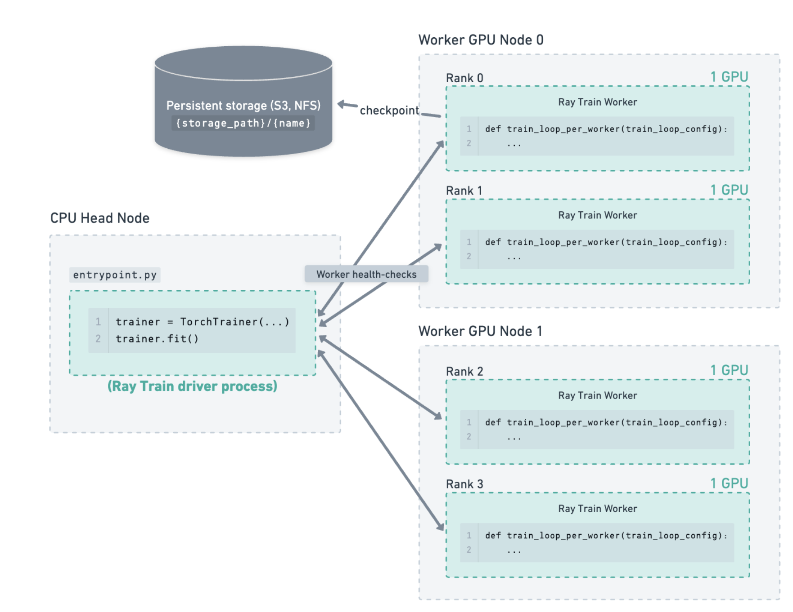
We are not going to go into the details of Ray Data and Ray Train integration in this blog post. But if you are interested in learning more about it, you can check out the Ray Data documentation.
Setup the Environment
Before we start any training, let’s first check how many GPUs (and CPUs) are available in our Ray Cluster.
import ray
import torch
def check_cluster_gpus():
"""Check GPU count in the entire Ray cluster."""
# Initialize Ray if not already initialized
if not ray.is_initialized():
ray.init()
# Get cluster resources (total GPUs in cluster)
cluster_resources = ray.cluster_resources()
total_gpus = cluster_resources.get("GPU", 0)
# Get available resources (currently available GPUs)
available_resources = ray.available_resources()
available_gpus = available_resources.get("GPU", 0)
# Get local GPU count (GPUs on this node only)
local_gpus = torch.cuda.device_count() if torch.cuda.is_available() else 0
# Print results
print("\n" + "="*60)
print("Ray Cluster GPU Information")
print("="*60)
print(f"Total GPUs in cluster: {int(total_gpus)}")
print(f"Available GPUs in cluster: {int(available_gpus)}")
print(f"Local GPUs (head node): {local_gpus}")
print("="*60)
# Additional cluster info
print("\nCluster Resources:")
print(f" CPUs (total): {int(cluster_resources.get('CPU', 0))}")
print(f" CPUs (available): {int(available_resources.get('CPU', 0))}")
# Show node details if available
try:
nodes = ray.nodes()
print(f"\nCluster Nodes: {len(nodes)}")
for i, node in enumerate(nodes):
node_resources = node.get('Resources', {})
node_gpus = node_resources.get('GPU', 0)
print(f" Node {i+1}: {int(node_gpus)} GPU(s)")
except Exception as e:
print(f"\nNote: Could not retrieve node details: {e}")
print()
return {
'total_gpus': int(total_gpus),
'available_gpus': int(available_gpus),
'local_gpus': local_gpus
}
if __name__ == '__main__':
check_cluster_gpus()As you can see, the cluster which I have has a total of 8 GPUs. The cluster consists of a total of one Head Node and two Worker Nodes, with each worker node having 4 GPUs.
============================================================
Ray Cluster GPU Information
============================================================
Total GPUs in cluster: 8
Available GPUs in cluster: 8
Local GPUs (head node): 0
============================================================
Cluster Resources:
CPUs (total): 96
CPUs (available): 96
Cluster Nodes: 3
Node 1: 0 GPU(s)
Node 2: 4 GPU(s)
Node 3: 4 GPU(s)Distributed Training with Ray Train and PyTorch FSDP
Now that we have understood the basics of Ray Train, and also have a Ray cluster ready, let’s now dive into distributed training with Ray Train and PyTorch FSDP.
1. Specify Cluster Scaling
First, set up how many Ray workers (processes) will participate, typically one per GPU. For a Ray cluster with 8 GPUs:
scaling_config = ScalingConfig(
num_workers=8, # e.g., 8 GPUs in our cluster
use_gpu=True,
resources_per_worker={"CPU": 2, "GPU": 1},
)2. Data Preparation: PyTorch DataLoaders
Data preparation is unchanged from typical PyTorch or DDP usage. Use our usual transforms and DataLoader logic:
from torchvision import datasets, transforms
from torch.utils.data import DataLoader
from filelock import FileLock
import os
def get_dataloaders(batch_size):
transform = transforms.Compose([
transforms.ToTensor(),
transforms.Normalize((0.5, 0.5, 0.5), (0.5, 0.5, 0.5)),
])
with FileLock(os.path.expanduser("~/data.lock")):
train_ds = datasets.CIFAR10("~/data", train=True, download=True, transform=transform)
valid_ds = datasets.CIFAR10("~/data", train=False, download=True, transform=transform)
return (
DataLoader(train_ds, batch_size=batch_size, shuffle=True),
DataLoader(valid_ds, batch_size=batch_size),
)No special considerations are needed for FSDP at this stage.
3. Define the Training Function
Next, let’s define the training function for the Ray Train worker. This is the training function that will be executed by each worker.
As the model is now being prepared for FSDP, we need to use the prepare_model function to prepare the model for FSDP.
def train_func_per_worker(config):
lr = config["lr"]
epochs = config["epochs"]
batch_size = config["batch_size_per_worker"]
ctx = ray.train.get_context()
rank = ctx.get_world_rank()
world_size = ctx.get_world_size()
if rank == 0:
print(f"Training with FSDP across {world_size} workers...")
# Prepare DataLoaders for distributed training
train_dl, valid_dl = get_dataloaders(batch_size)
train_dl = ray.train.torch.prepare_data_loader(train_dl)
valid_dl = ray.train.torch.prepare_data_loader(valid_dl)
# Define the model
model = VisionTransformer(
image_size=32, patch_size=4,
num_layers=12, num_heads=8, hidden_dim=384, mlp_dim=768, num_classes=10,
)
# Prepare the model for FSDP
model = ray.train.torch.prepare_model(model, parallel_strategy="fsdp")
criterion = nn.CrossEntropyLoss()
optimizer = torch.optim.AdamW(model.parameters(), lr=lr, weight_decay=1e-2)
for epoch in range(epochs):
model.train()
total_loss, sample_cnt = 0.0, 0
for X, y in train_dl:
pred = model(X)
loss = criterion(pred, y)
optimizer.zero_grad()
loss.backward()
optimizer.step()
total_loss += loss.item() * X.shape[0]
sample_cnt += X.shape[0]
train_loss = total_loss / sample_cnt
# Validation loop
model.eval()
valid_loss, correct, total = 0.0, 0, 0
with torch.no_grad():
for X, y in valid_dl:
pred = model(X)
valid_loss += criterion(pred, y).item() * X.shape[0]
total += y.shape[0]
correct += (pred.argmax(dim=1) == y).sum().item()
valid_loss /= total
acc = correct / total
if rank == 0:
print(f"Epoch {epoch+1}: Train Loss={train_loss:.4f} Valid Loss={valid_loss:.4f} Acc={acc:.3%}")
metrics = {"epoch": epoch+1, "train_loss": train_loss, "valid_loss": valid_loss, "accuracy": acc}
# Checkpoint every 5 epochs
if (epoch + 1) % 5 == 0:
with tempfile.TemporaryDirectory() as ckpt_dir:
torch.save(model.module.state_dict(), os.path.join(ckpt_dir, "model.pt"))
ray.train.report(metrics, checkpoint=ray.train.Checkpoint.from_directory(ckpt_dir))
else:
ray.train.report(metrics)To change the parallel strategy to DDP, simply change the parameter to "ddp":
model = ray.train.torch.prepare_model(model, parallel_strategy="fsdp")4. Configure Run Checkpointing and Storage
We now use Ray’s checkpointing utilities to save the best results and recoverable states:
from ray.train import RunConfig, CheckpointConfig
checkpoint_config = CheckpointConfig(
num_to_keep=2,
checkpoint_score_attribute="accuracy",
checkpoint_score_order="max",
)
run_config = RunConfig(
name="cifar10_fsdp_example",
storage_path="/mnt/cluster_storage/training/", # Use a persistent/shared location
checkpoint_config=checkpoint_config,
)5. Launch Training with TorchTrainer
Bring all the configs together and kick off distributed training:
from ray.train.torch import TorchTrainer
global_batch_size = 1024
num_workers = 8
batch_size_per_worker = global_batch_size // num_workers
train_loop_config = {
"lr": 1e-3,
"epochs": 20,
"batch_size_per_worker": batch_size_per_worker,
}
trainer = TorchTrainer(
train_loop_per_worker=train_func_per_worker,
train_loop_config=train_loop_config,
scaling_config=scaling_config,
run_config=run_config,
)
print("Starting FSDP distributed training...")
result = trainer.fit()6. Load and Use Checkpoints
Once the training is complete, the model can be restored from the best checkpoint:
import torch
from torchvision.models import VisionTransformer
import os
ckpt = result.checkpoint
with ckpt.as_directory() as ckpt_dir:
model_path = os.path.join(ckpt_dir, "model.pt")
model = VisionTransformer(
image_size=32, patch_size=4,
num_layers=12, num_heads=8, hidden_dim=384, mlp_dim=768, num_classes=10,
)
state_dict = torch.load(model_path, map_location="cpu")
model.load_state_dict(state_dict)Let’s now put all the pieces together and train the model on the cluster.
import os
import tempfile
import torch
from torch import nn
from torchvision import datasets, transforms
from torchvision.models import VisionTransformer
from torch.utils.data import DataLoader
from filelock import FileLock
import ray
from ray.train import ScalingConfig, RunConfig, CheckpointConfig
from ray.train.torch import TorchTrainer
def get_dataloaders(batch_size):
transform = transforms.Compose([
transforms.ToTensor(),
transforms.Normalize((0.5, 0.5, 0.5), (0.5, 0.5, 0.5))
])
with FileLock(os.path.expanduser("~/data.lock")):
train_data = datasets.CIFAR10(root="~/data", train=True, download=True, transform=transform)
valid_data = datasets.CIFAR10(root="~/data", train=False, download=True, transform=transform)
train_loader = DataLoader(train_data, batch_size=batch_size, shuffle=True)
valid_loader = DataLoader(valid_data, batch_size=batch_size)
return train_loader, valid_loader
def train_func_per_worker(config):
lr = config["lr"]
epochs = config["epochs"]
batch_size = config["batch_size_per_worker"]
ctx = ray.train.get_context()
world_size = ctx.get_world_size()
local_rank = ctx.get_world_rank()
if local_rank == 0:
print(f"FSDP Training on {world_size} workers")
train_loader, valid_loader = get_dataloaders(batch_size)
train_loader = ray.train.torch.prepare_data_loader(train_loader)
valid_loader = ray.train.torch.prepare_data_loader(valid_loader)
model = VisionTransformer(
image_size=32, patch_size=4,
num_layers=12, num_heads=8, hidden_dim=384, mlp_dim=768, num_classes=10,
)
# [FSDP] Key change from DDP:
model = ray.train.torch.prepare_model(model, parallel_strategy="fsdp")
criterion = nn.CrossEntropyLoss()
optimizer = torch.optim.AdamW(model.parameters(), lr=lr, weight_decay=1e-2)
for epoch in range(epochs):
model.train()
train_loss, n = 0.0, 0
for X, y in train_loader:
pred = model(X)
loss = criterion(pred, y)
optimizer.zero_grad()
loss.backward()
optimizer.step()
train_loss += loss.item() * X.shape[0]
n += X.shape[0]
train_loss /= n
model.eval()
correct, total, valid_loss = 0, 0, 0.0
with torch.no_grad():
for X, y in valid_loader:
pred = model(X)
valid_loss += criterion(pred, y).item() * X.shape[0]
total += y.shape[0]
correct += (pred.argmax(dim=1) == y).sum().item()
valid_loss /= total
accuracy = correct / total
metrics = {
"epoch": epoch + 1,
"train_loss": train_loss,
"valid_loss": valid_loss,
"accuracy": accuracy
}
# Save a checkpoint every 5 epochs
if (epoch + 1) % 5 == 0:
with tempfile.TemporaryDirectory() as tmp_ckpt_dir:
torch.save(model.module.state_dict(),
os.path.join(tmp_ckpt_dir, "model.pt"))
ray.train.report(metrics, checkpoint=ray.train.Checkpoint.from_directory(tmp_ckpt_dir))
else:
ray.train.report(metrics)
scaling_config = ScalingConfig(num_workers=8, use_gpu=True, resources_per_worker={"CPU": 2, "GPU": 1})
checkpoint_config = CheckpointConfig(num_to_keep=2, checkpoint_score_attribute="accuracy", checkpoint_score_order="max")
run_config = RunConfig(name="cifar10_fsdp_example", storage_path="/mnt/cluster_storage/training/", checkpoint_config=checkpoint_config)
global_batch_size = 1024
batch_size_per_worker = global_batch_size // scaling_config.num_workers
train_loop_config = {"lr": 1e-3, "epochs": 20, "batch_size_per_worker": batch_size_per_worker}
trainer = TorchTrainer(
train_loop_per_worker=train_func_per_worker,
train_loop_config=train_loop_config,
scaling_config=scaling_config,
run_config=run_config,
)
result = trainer.fit()While the training is runing, we can see the progress in the Ray dashboard. We can now see that all 8 GPUs are being used for training.
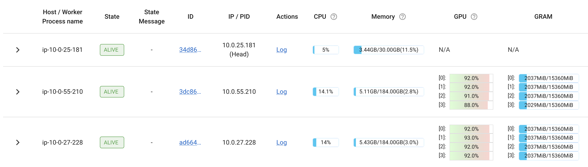
Conclusion
Distributed training from scratch is often perceived as a complex and challenging endeavor, especially when it comes to configuring multiple GPUs and orchestrating communication between workers. However, modern open-source frameworks such as Ray Train, together with robust PyTorch features like FSDP, have significantly lowered the barrier to scalable, efficient distributed deep learning. In this blog, we walked through a step-by-step workflow for setting up a distributed training pipeline to fine-tune a model on multiple GPUs, leveraging Ray Train for orchestration and PyTorch FSDP for efficient memory and communication management.
By utilizing Ray’s high-level abstractions, we are able to streamline the engineering process, eliminate much of the boilerplate involved in custom distributed training, and gain access to valuable capabilities such as experiment tracking, fault tolerance, and automatic checkpointing. Ray’s scaling configurations allow us to harness all available compute resources, whether just a few or dozens of GPUs, while its dashboard provides clear visibility into resource utilization and training progress in real-time.
In this blog, we mostly talk about Data Parallelism (DP) technique for scaling training to multiple GPUs. But for tackling even more demanding tasks with extremely large models and datasets, there are additional and more advanced techniques available. Strategies such as Pipeline Parallelism, Tensor Parallelism, and Sequence Parallelism have become key components in scaling deep learning to the frontier level. These methods allow models to be split across layers, parameters, or computation steps, enabling efficient training across clusters of GPUs.
Emerging practices in hybrid sharding, mixed precision, model offloading, and asynchronous optimization further push the boundaries of what is possible, empowering researchers and engineers to experiment at ever-increasing scales while managing resource and memory efficiency. Maybe in some future blog, we will discuss these advanced techniques in more detail (as I learn them :)).
References & Further Resources
- Anyscale and Ray
- Distributed Training
- LLM and Advance Deep Learning
- Ray and PyTorch